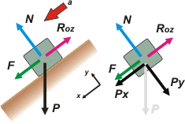

|
NO ME SALEN
PROBLEMAS RESUELTOS DE FÍSICA DEL CBC
(Leyes de conservación, trabajo, energía mecánica)
|
|

|
2.10- Una caja de 30 kg es arrastrada en línea
recta, apoyada sobre un plano horizontal, aplicándole
una fuerza constante de 60 N. Determinar
el coeficiente de rozamiento entre la caja y el
plano, para que se desplace manteniendo constante
su energía mecánica.
La misma caja desciende por un plano inclinado
37°, donde el coeficiente de rozamiento es μd=0,25. Determinar qué fuerza paralela al plano
la hará moverse con energía mecánica constante.
La primera parte del ejercicio es tan sencilla que me da cosa resolvértelo. Que funciones de precalentamiento. Vamos a ver el DCL. |
 |
El enunciado no lo dice... pero la fuerza constante de 60 N debe ser horizontal, F, si no, no habría forma de calcular el coeficiente de rozamiento. (En realidad podríamos tomarlo al pie de la letra y hallar el coeficiente en función del ángulo que F forme con el plano... aunque estoy casi seguro que no es ésa la intención del ejercicio, debe tratarse de una simple omisión).
Vamos a las ecuaciones de Newton a ver qué nos dicen. |
|
|
ΣFx = m ax → F — Roz = 0
ΣFy = m ay → N — P = 0
y el rozamiento → Roz = μd . N
Di por supuesto que entendías que energía mecánica constante, en este contexto (en un plano horizontal no hay variación de altura ni, por ende, de energía potencial), significa energía cinética constante; o sea, velocidad constante, o sea... aceleración igual a cero.
Combinando las ecuaciones nos queda...
F = μd . m . g
μd = 60 N / 30 kg . 10 m/s²
|
|
| |
|
| Ahora sí, vamos a la segunda parte... que se pone más peluda (pero no mucho). Fijate que ahora la condición que nos ponen es que la energía mecánica sea constante. Pero como el cuerpo está bajando, inevitablemente su energía potencial debe ir disminuyendo. Luego, para que la mecánica sea constante, su cinética debe aumentar. Analicemos el DCL. |
|
|
|  |
¿Ya te diste cuenta? A mentalmente, me refiero. Yo sí, mirá: para que la energía mecánica sea constante el trabajo de todas las fuerzas no conservativas debe ser nulo. (No nula cada una de ellas, sino nula la suma de los trabajos de cada una).
Eso ocurriría si deslizase sin rozamiento ni ninguna otra fuerza que lo empuje ni lo retenga. Pero el rozamiento está, es un dato del ejercicio... Entonces... simplemente alcanzará con que el trabajo que haga F sea igual y contrario al que haga el rozamiento... |
|
|
|
Pero como siempre actúan en los mismos desplazamientos, la fuerza F debe ser igual al rozamiento.
Pero hagamos de cuenta que no nos apiolamos... ¿cuál sería el planteo mecánico, correcto, tradicional, no-imaginativo, no clever, no-einstein, el democrático, el de Manolito, el nuestro...? |
|
|
Wno-C = ΔEM
WRoz + WF = 0
Roz Δx cos 180º + F Δx cos 0º = 0
F Δx = Roz Δx
F = Roz
F = μd . N
F = μd . m . g . cos 37º
F = 0,25 . 30 kg . 10 m/s² . 0,8 |
(la fundamental)
(condición del enunciado)
(definición de trabajo)
(pasaje de miembros)
(cancelación de Δx)
(naturaleza del rozamiento)
(ya sabés, no te hagas...)
(vamos a los bifes...) |
|
|
|
|
|
|
DESAFIO: Y sin hacer cuentas... ¿con qué aceleración estará bajando nuestra caja? |
|
 |
|
|
| Algunos derechos reservados.
Se permite su reproducción citando la fuente. Los infractores de esta condición serán penalizados con una clase de 4 horas sobre epistemología de la interpretación de los sueños: pruebas irrefutables sobre la existencia de la madre. Última actualización nov-08. Buenos Aires, Argentina. |
|
|
|